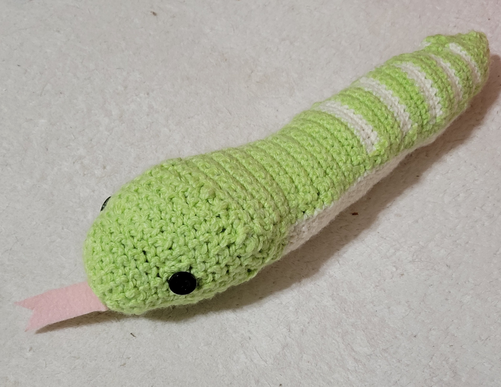
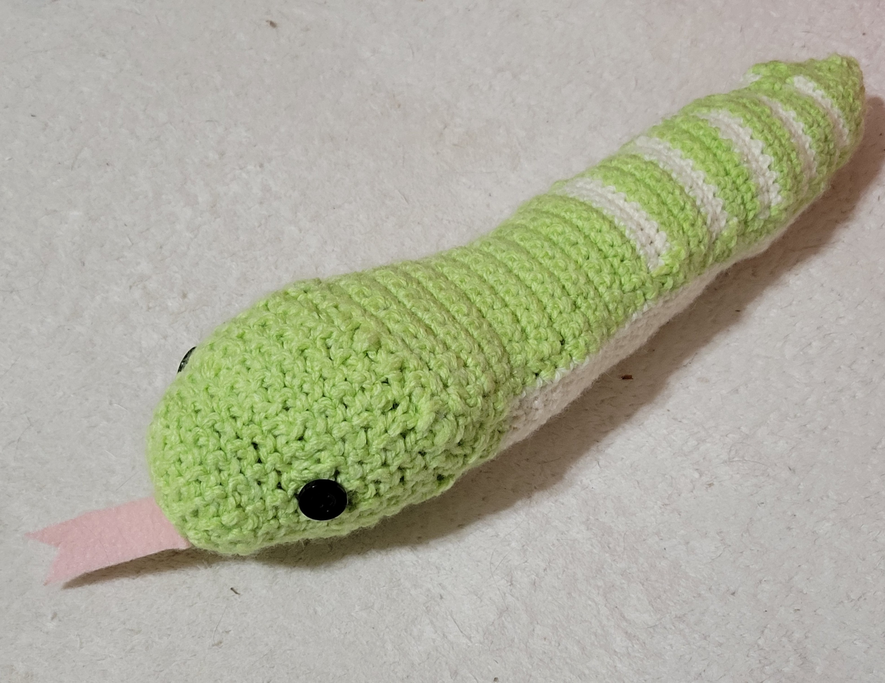

好きなもの
基本雑食なのでいろいろなことに手を出し、人として気持ち悪くなる直前までやりこみます。何を書くかとても悩んだので長期的に行っているものを抽出しました。漫画やアニメ・映画・本も教養として学んでいます。会話の幅は広い方です。
音楽
好きなアーティスト
今までハマったアーティストさんが多すぎて選びきれない！そして好きな曲も選びきれない！アーティストさんを触ると好きな曲が見れます。
音楽の楽しみ方
「ハマる→曲を全て聞く→独自のセットリストを作成し、ライブを開催する」という流れが好きです
ものを作る
縫物・編物・お絵描き（LINEスタンプ・Tシャツ作成）・動画作成・3Dモデル作成など作るのが好きです。出来は関係ありません。作るという達成感に喜びを感じるのです。
 
